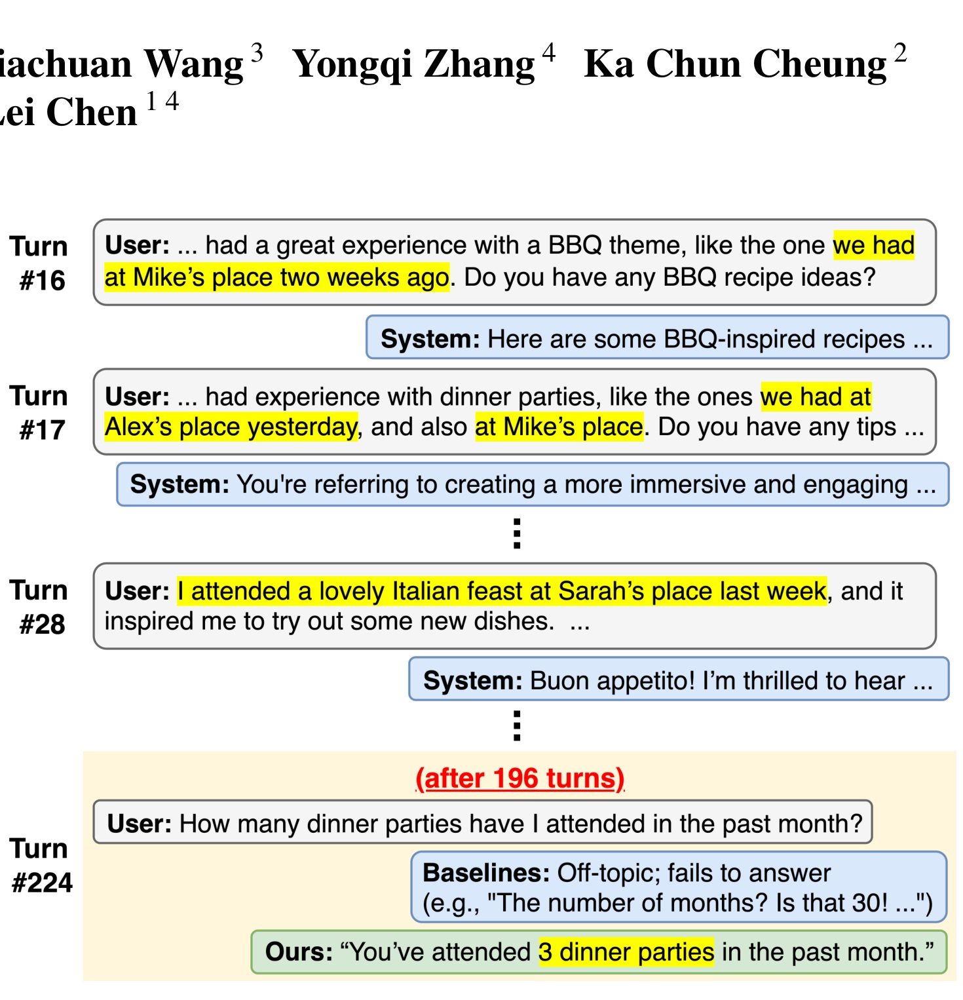
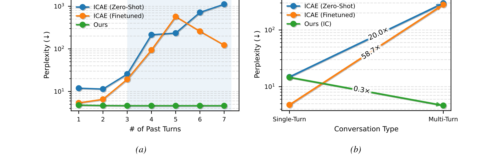
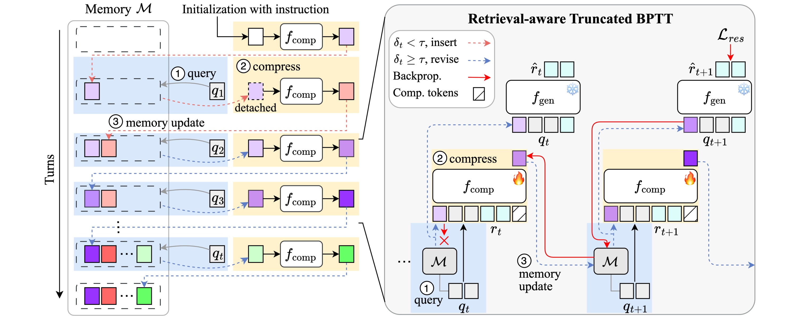
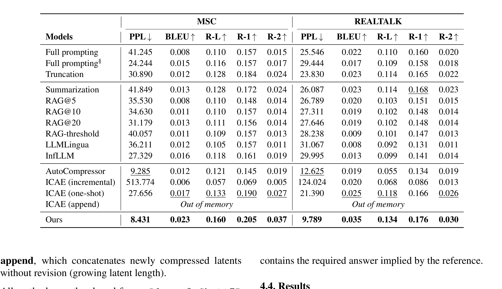
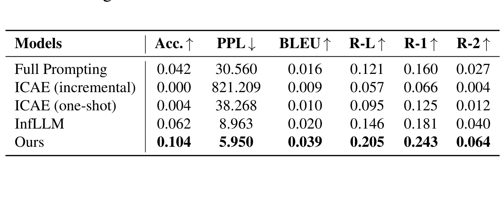
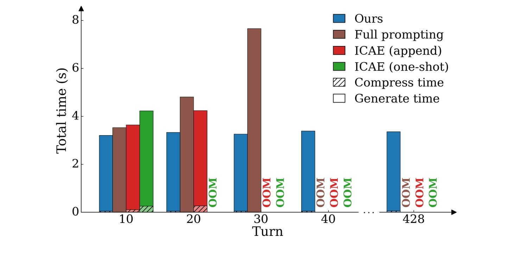
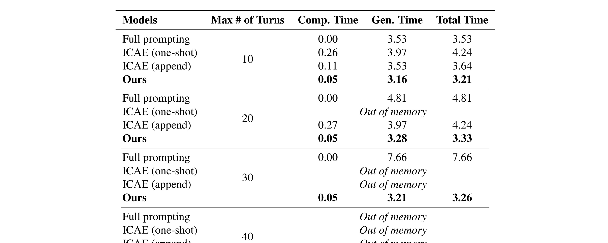
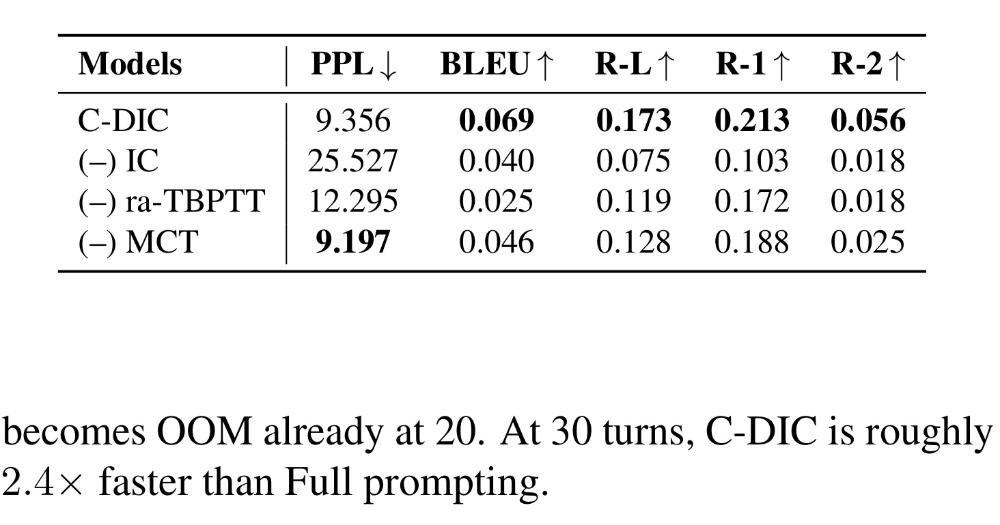

Context-Driven Incremental Compression for Multi-Turn Dialogue Generation 精读笔记
论文链接：arXiv:2606.12411
- 标题：Context-Driven Incremental Compression for Multi-Turn Dialogue Generation
- 作者：Yeongseo Jung, Jaehyeok Kim, Eunseo Jung, Jiachuan Wang, Yongqi Zhang, Ka Chun Cheung, Simon See, Lei Chen
- 一作机构：The Hong Kong University of Science and Technology，Yeongseo Jung 同时标注 NVIDIA AI Technology Center，脚注说明相关工作完成于 NVIDIA 实习期间。
- 会议：ICML 2026 Proceedings，PMLR 306
- 主类别：LLM
1. 背景和问题
这篇论文讨论的是多轮对话生成中一个很具体但很重要的成本和记忆问题：当用户和助手持续交互时，最直接的做法是把所有历史轮次都拼进下一轮输入，让模型在完整上下文上生成回复。这个办法概念上简单，却把对话长度变成了推理成本、显存占用和注意力分配的共同压力源。论文把一段 T 轮对话写作 D_{1:T} = {(q_1, r_1), ..., (q_T, r_T)}，第 t 轮模型要在当前问题 q_t 和历史 D_{<t} 上预测 r_t。若每轮平均 L 个 token，全历史提示在第 t 轮大约有 tL 个 token，自注意力成本随输入长度平方增长，整段对话的累计代价会接近 O(T^3 L^2)。这不是单次长文本推理的线性扩展，而是交互式会话反复重算历史带来的三次增长。
更麻烦的是，长对话的困难不只是贵。用户会在数十轮甚至数百轮之后回指早先事实、补充约束、修正偏好，或者在几个主题之间来回切换。全历史提示虽然保留了原文，但模型仍可能受近因偏置影响，注意力落在近处或显著片段上；截断最近 k 轮会直接丢掉远处事实；自然语言摘要可能遗漏细节，并且一旦摘要写错或过时，后续对话会把这个错误继续带下去。论文把这些现象归纳为 semantic drift 和 contextual erosion，即语义线程漂移和上下文侵蚀。

Figure 1 选了一个很典型的长程引用追踪场景：用户在前面很多轮里提到过 dinner party，经过 196 个中间轮次后又问过去一个月参加过几次。对模型而言，这不是普通摘要能轻易解决的问题，因为答案需要跨越远距离、聚合同一主题下分散出现的事件，同时忽略中间大量无关内容。图中 baseline 失败的原因并不是没有看到任何文本，而是没有在“当前问题需要哪条历史线程”这个粒度上维护可检索、可修订的状态。C-DIC 的设计目标正是把这些早先事实压缩成线程级 latent memory，并在当前 query 激活对应记忆，而不是每轮都重新把整段历史交给生成器。
论文特别强调静态潜变量压缩在多轮对话中的脆弱性。已有 latent context compression 方法，例如 ICAE，把一段上下文压成固定数量的 latent vectors，再让冻结生成器使用这些 latent 生成后续文本。这类方法对静态文档或一次性输入很有吸引力，因为它把长文本变成固定大小的条件表示。但多轮对话不是一次性文档：第 t 轮压缩出来的状态会在第 t+1 轮被继续读取、修改或追加，压缩器如果只学过 one-shot compression，就不一定知道如何处理已经被压缩过的记忆，更不一定知道如何纠正旧记忆。

Figure 2 是论文动机里最有杀伤力的证据。左图显示 ICAE zero-shot 和 MSC fine-tuned 版本在连续压缩几轮后 perplexity 快速上升，而 C-DIC 保持稳定；右图显示从 single-turn 转到 multi-turn 评价时，静态模型的困惑度大幅爆炸，C-DIC 反而下降。这里的重点不是某个 baseline 调参不够，而是训练目标和使用方式不匹配：静态压缩器学习的是把一段原始上下文一次性编码为 latent，实际多轮系统却要求它不断读取旧 latent、融合新轮次、再写回 latent。这种反复自我压缩会累积误差，类似把摘要再摘要、把已经模糊的状态继续模糊化。
因此，C-DIC 把问题重新定义为“对话线程记忆”的维护，而不是“长 prompt 缩短”。它假设对话由多个 interleaved contextual threads 组成：同一个会话里可能交替出现晚餐、工作、代码、旅行、偏好修正等线程。模型每轮不需要读取所有历史，只需要根据当前 query 找到相关线程的 compressed state，并在生成后把新信息写回对应状态；如果当前 query 和已有线程都不够相似，就开一个新状态。这个观点把上下文管理从文本级压缩转成 latent memory 的增量更新，也让训练目标更接近真实使用链路。
从论文贡献看，C-DIC 主要解决三件事。第一，它提供 retrieval-conditioned incremental compression，使压缩依赖当前要用到的记忆，而不是无差别处理全历史。第二，它设计了 retrieve → revise → write-back 的轻量循环，让状态可以被修订，不是写死的摘要。第三，它把 truncated backpropagation-through-time 改成 retrieval-aware 版本，只沿实际被写回的记忆路径传递一跳梯度，从而避免完整 BPTT 的显存负担，也避免固定窗口 TBPTT 截掉真正被远程使用的状态。
2. 方法
C-DIC 的核心思想可以概括为：生成器保持冻结，压缩器负责维护一组可检索、可替换的对话线程状态。每个 memory slot 存一段 latent state，而不是一段自然语言摘要；当前轮次先用 query 选择相关 slot，生成器只读取这些 latent states 和当前 query，然后压缩器把当前轮次和相关记忆融合成新状态，最后根据相似度决定插入新 slot 还是替换旧 slot。这个流程使每轮计算和 retrieved set 的大小相关，而不是和完整历史长度相关。

Figure 3 展示了全流程。左侧是推理和记忆更新：初始化时把系统 instruction 或初始上下文压成一个线程状态；每一轮先计算当前 query 和已有 memory states 的匹配分数，得到相关集合 R_t；随后冻结的 response generator 基于 R_t 和 q_t 生成回复；压缩器再把 R_t、当前 query、当前 response 和 compression tokens 组合为新状态 Z_t；最后根据相似度阈值执行 insert 或 revise。右侧是训练：每轮的 response loss 只把梯度沿着 argmax usage edge 回传一跳，后续更远的历史被截断，retrieved 但未被写回的状态作为 stop-gradient context 使用。图里的红色和蓝色虚线对应 topic shift 和 on-topic revision，说明 C-DIC 不是单纯追加记忆，而是在“新主题”和“旧线程延续”之间做动态选择。
2.1 从静态压缩到对话线程记忆
论文没有从零训练压缩器，而是用 ICAE 的 pretrained checkpoint 初始化。ICAE 已经学会把长文本映射为固定数量的 latent vectors，这给 C-DIC 一个比较强的压缩起点。不同之处在于，C-DIC 把这个压缩能力迁移到 retrieval-conditioned multi-turn setting：生成器 f_gen 冻结，训练时只更新 compressor 相关参数、LoRA-adapted compressor 和 learnable compression tokens。这样做的直接好处是把研究焦点放在 memory mechanism，而不是重新训练一个大语言模型；同时也降低了训练成本，附录实现细节给出的训练设置是 Llama2-Chat-7B backbone、A100 80GB、约 17 GPU hours。
最基础的 turn-wise compression 写作：
符号解释：q_t 是第 t 轮用户 query，r_t 是 teacher-forced training 下的 gold response，C 是 n 个 learnable compression tokens 的嵌入矩阵，theta 是 compressor 参数，Z_t 是这一轮压缩得到的 latent state。这个公式说明，即使不引入检索，压缩器也可以把当前问答对映射成固定大小状态；但它还没有回答“哪些旧状态应该被读入”和“新状态应该覆盖谁”。
C-DIC 的实际压缩不是孤立地看当前轮，而是把 retrieved supports 也作为输入：
符号解释：R_t 是从旧 memory bank M_{<t} 中检索到的相关状态集合。这个式子比基础式多了 R_t，意味着新状态不是对当前轮的局部摘要，而是“当前轮对某条上下文线程的更新”。如果用户继续讨论同一主题，R_t 会把旧状态带入压缩器，新 Z_t 继承旧线程并吸收新信息；如果用户切换主题，R_t 可能为空或只作为前向 continuity fallback 使用，最终新 Z_t 会作为新线程加入 memory。
2.2 查询相关的记忆检索
检索模块的目标是让当前 query 主动选择与自己相关的 compressed states。论文把每个 memory slot Z_i 池化成一个向量，用当前 query 经过 compressor 和 compression tokens 得到 query-side 表示，再计算带 recency decay 的相似度：
符号解释：psi 是 pooling function，可以理解为把 token-level latent 表示聚合成 slot-level 向量；Delta t_i 是状态 Z_i 距离上次被检索经过的轮数；alpha 是衰减率；S(q_t, Z_i) 是当前 query 和某个 memory slot 的主题匹配分数。这个式子有两个信号：语义相似度决定“是不是同一线程”，指数衰减则轻微偏向最近被使用的记忆，避免太旧但语义泛化的 slot 被频繁误召回。
检索集合定义为：
符号解释：tau 是固定检索阈值。若多个 slot 超过阈值，生成器可以同时看到多个相关线程；若没有 slot 超过阈值，算法仍取 argmax slot 作为 forward fallback，使生成阶段不至于完全失去连续性，但训练时会把它 detach，避免把 off-topic turn 的梯度写进错误记忆。这个 fallback 很细：它承认生成时可能需要一点上下文连续性，同时又不让低相关状态被监督信号污染。
生成器读取 retrieved latent states，而不是完整历史：
符号解释：phi 是冻结 generator 参数，hat r_t 是模型生成回复。由于 f_gen 冻结，C-DIC 的学习压力集中在 compressor 是否能提供足够好的 R_t 和 Z_t 上。这个设计避免把所有收益归因于更强 decoder；实验中大多数比较使用同一 7B backbone，也是在验证上下文管理机制本身。
2.3 写回策略与线程连续性
检索之后还要决定新状态放到哪里。论文定义当前 query 与所有已有 slot 的最大相似度：
符号解释：delta_t 是当前轮与 memory bank 的最高匹配度，j_t 是最相关旧状态的索引。然后 C-DIC 使用一个确定性、无梯度的 write-back rule：
符号解释：当最高相似度低于阈值，模型判断这是 topic shift，于是插入新状态；当相似度高于阈值，模型判断这是旧线程延续，于是用新压缩状态替换最相关旧 slot。这里的“替换”是 C-DIC 与追加式 memory 的重要差别。追加式策略会让 memory bank 越来越长，生成端即使检索少量状态，也会面对更多候选；而替换策略把线程中的新旧信息融合到同一个状态里，使活跃线程保持可修订。
这种规则也解释了论文为什么选择 replacement 作为主策略。附录比较了 EMA 和 gating network。EMA 用 beta old memory + (1 - beta) new memory 混合旧新状态，直觉上更平滑，但实验只带来很小甚至负面的提升；门控网络更复杂，在部分 ROUGE 上略有改善，却增加额外模块。作者最后选择 replacement，是因为它最简单、稳定，并且和“当前线程状态被修订”的语义一致。
从系统角度看，写回规则承担了两类错误控制。第一，低相似度时插入新 slot，避免把不同主题强行糅合到同一 latent state，减少 thread contamination。第二，高相似度时替换旧 slot，避免同一主题产生一串重复、相互矛盾的旧状态。它不是严格保证 memory bank 有上界，因为频繁 topic shift 仍会增加 slot 数；但生成端只读取 retrieved subset，附录 Table 13 和 Table 14 说明 retrieved slots 平均仍很小，并且可以用 bounded retrieval 固定生成侧的 latent context size。
2.4 retrieval-aware truncated BPTT
如果把 memory update 当成 recurrent computation，训练自然会遇到 BPTT 问题。完整 BPTT 可以让未来所有使用某个 slot 的 loss 都回传到该 slot 的生成过程，但长对话会保留全部计算图，显存成本不可接受。固定窗口 TBPTT 则只保留最近 K 步，问题是它按时间截断，不按实际检索路径截断：一个很早的 slot 如果在第 t 轮被重新检索并写回，固定窗口可能仍然不让它获得梯度。
C-DIC 的答案是 retrieval-aware truncated BPTT。训练目标仍是每轮负对数似然平均：
符号解释：ell_t 是第 t 轮 teacher-forced response 的生成损失，R_t 是该轮检索到的 memory supports。注意这个 loss 看起来像普通语言建模损失，但梯度不是对所有被读取状态都完整展开，而是按写回路径选择。
论文把梯度规则写成：
符号解释：只有当当前轮被判定为旧线程延续时，loss 才沿着最相似、也就是将被替换的 slot Z_{j_t} 回传一跳；其他 retrieved states 即使参与生成，也只作为 stop-gradient context。若 delta_t < tau，系统可能仍取 argmax slot 做生成 fallback，但训练时 detach 它，不把 off-topic 轮次的损失写进不匹配的记忆。这一规则与 write-back 语义一致：谁被当前新状态替换，谁才承担本轮监督；只被读出来辅助生成但没有被写回的状态，不承担当前轮 credit。
这个选择牺牲了完整可微的全路径学习，换来两个实际优势。第一，计算图短，训练长对话更可行。第二，监督信号更稀疏、更贴合实际 memory usage，减少不同线程之间的梯度串扰。它也解释了消融结果中去掉 ra-TBPTT 会损失明显：如果只靠普通截断或不沿检索路径回传，compressor 不容易学到“某个旧 slot 在未来被重新使用时应该如何变得更好”。
还可以从信息流角度再看一次这个训练目标。C-DIC 的 memory slot 不是外部数据库条目，而是 compressor 计算图中的中间状态；如果让每个未来 turn 都对过去所有 slot 回传梯度，模型会在显存上接近完整 recurrent network，同时也会把不相关主题的监督混在一起。论文的 mask 设计等价于给每轮训练样本指定一个责任 slot：当前 query 最像哪个旧线程、并且相似度超过阈值，哪个旧线程就为这次回复负责；否则这轮被视为新主题，不让旧线程承担责任。这个责任分配虽然简单，却和推理时的 replace rule 完全同构，因此训练和部署不会出现“训练时优化一批状态、推理时更新另一批状态”的偏差。
这种设计也让 C-DIC 与普通 RAG 有本质差异。RAG 检索的是原文片段，生成器每次看到的是不可修改的历史文本；C-DIC 检索的是上一轮或更早轮次写回的 latent state，生成后还会把新信息写回这个状态。换句话说，C-DIC 的 retrieval 不只是读取证据，而是定位要被修订的对话线程。若用户说“还是按刚才那个晚餐计划，但人数改成六个”，RAG 可以找回刚才的晚餐计划文本，却不会自然地产生一个更新后的计划状态；C-DIC 的 replace branch 则把“人数改成六个”并入原线程状态，后续再问预算、地点或菜单时，检索到的是修订后的 latent memory。
另一个细节是多槽检索和单槽写回之间的张力。R_t 可以包含多个超过阈值的状态，因为当前 query 可能同时关联多个主题，例如既提到旅行又提到预算；但 write-back 只替换最相似的 j_t，其他 retrieved slots 只作为生成条件。这样做降低了更新冲突：生成器可以参考多个线程，但真正被改写的只有当前最活跃线程。若让所有 retrieved slots 都接收梯度和写回，模型可能把同一新信息分散污染到多个主题；若只允许单槽检索，又会丢掉跨线程组合问题所需的辅助上下文。论文选择多槽读、单槽主写，是在表达能力和记忆稳定性之间的折中。
在实现层面，compression tokens C 扮演固定容量接口的角色。它们不是自然语言 token，而是让 compressor 在隐藏空间里预留 n 个位置承载上下文摘要。论文主实验使用 128 个 compression tokens，附录 Table 18 显示 64、128、256 的性能差异不呈明显单调趋势，说明这里的主要收益不来自简单增加 latent 容量，而来自如何在多轮中检索、修订和训练这些 latent states。这个观察对复现很重要：如果只盯着 token length 调参，而不实现 retrieval-conditioned update 和 ra-TBPTT，可能只会得到一个容量更大的静态压缩器，仍然无法处理滚动对话里的误差积累。
2.5 推理时的闭环执行
推理算法可以按四步理解。第一，若 memory bank 非空，计算当前 query 与每个 Z_i 的 S(q_t, Z_i)，找到最大匹配 j 和所有超过阈值的 slots。第二，若存在 slots 超过 tau，就把它们作为 R_t；若没有超过阈值但 memory 非空，就用 top-1 fallback；若 memory 为空，则 R_t 为空。第三，冻结生成器基于 R_t 和 q_t 生成 hat r_t。第四，压缩器把 R_t、q_t、hat r_t 和 compression tokens 压成 Z_t，并用上面的 insert 或 replace 规则更新 memory。
推理阶段的关键是无梯度和不重读全历史。它不需要把 D_{<t} 全部送回模型，也不需要在生成后重新编码所有旧文本；旧信息已经以 memory slots 形式存在，新轮次只改动一个或少数相关线程。这个设计使总 memory slots 可以增长，但每轮生成的输入规模保持相对稳定。论文在 Appendix J 中进一步测量 similarity scoring overhead：即便 N 到 10^3，scoring 和 top-Bret retrieval 也只有约 0.16ms；N 到 10^6 也约 41ms，相比几秒级生成时间仍小。这说明瓶颈主要不是检索计算，而是如何让 latent memory 足够准确。
复现时还要把 tau 和 alpha 当作记忆策略参数，而不是普通分类阈值。tau 过低会把不够相关的线程合并，增加 thread contamination；tau 过高会频繁新建 slot，减少 revision，附录敏感性实验里 tau = 0.9 的 memory growth 和质量退化就对应这个现象。alpha 则控制相同语义下的时间偏置，alpha = 0 完全不惩罚旧状态，alpha 过大又可能把真正的远程依赖排到后面。论文主设置 tau = 0.8、alpha = 0.05，意义是给语义相似度留主导权，同时用温和 recency 防止陈旧泛化记忆长期占位。这也让后续 bounded retrieval 可以只约束生成侧槽数，而不破坏前面的线程判别逻辑。
从工程使用角度看，这个推理循环还隐含了几个边界条件。第一，memory state 的 recency counter 必须随着每轮更新维护，否则公式中的指数衰减会失去意义，系统可能反复召回早已不活跃的泛化状态。第二，top-1 fallback 只能用于生成连续性，不能被解释成“模型确信找到了相关线程”；训练中 detach fallback state 正是为了避免把这种低置信上下文写坏。第三，write-back 是基于生成后的 hat r_t，而不是只基于用户 query，因此模型自己的错误回复也可能进入记忆，这就是论文要做 closed-loop evaluation 的原因。Table 2 和 Table 11 显示 C-DIC 在闭环下退化较小，但并不等于完全消除了错误传播。第四，真实产品若允许用户编辑早先消息，latent memory 需要额外的 invalidation 或重建机制；KV cache 的 edit invalidation 问题在 latent memory 中不会自动消失，只是表现为某些 slot 已经不再对应真实历史。
需要注意的是，C-DIC 并没有解决所有 long-context 问题。它保留的是压缩后的 latent states，不是可解释的显式事实库；如果某个敏感信息被压入 latent memory，删除、审计和权限控制会比文本片段更困难。它也依赖初始 compressor 的表示能力，换 backbone 或 compression token length 可能改变表现。论文的贡献更适合理解为一种可训练的对话状态维护机制，而不是完整的长期记忆产品方案。
3. 实验结果
实验设计围绕三个问题展开：C-DIC 是否比全历史、截断、摘要、RAG、prompt compression 和静态 latent compression 更好；它是否真的改善长程依赖，而不是只提升常规 n-gram 指标；它是否在长对话长度下保持低延迟。主数据集是 Multi-Session Chat 和 REALTALK。MSC 是多 session 人类对话，最多五个 sessions；REALTALK 是更长、更开放的 WhatsApp 风格对话，平均 21.9 sessions 和 894.4 utterances。作者在 MSC 上训练或适配模型，在 REALTALK 上做 zero-shot，以测试长度和域迁移。

Table 1 是主结果。C-DIC 在 MSC 上 PPL 为 8.431，BLEU 为 0.023，ROUGE-L 为 0.160，ROUGE-1 为 0.205，ROUGE-2 为 0.037，均为表中最好或最强；在 REALTALK per-session zero-shot 上 PPL 为 9.789，BLEU 为 0.035，ROUGE-L 为 0.134，ROUGE-1 为 0.176，ROUGE-2 为 0.030，也优于同 backbone 下的主要对照。对比尤其清楚的是 ICAE incremental：它在 MSC 上 PPL 达到 513.774，在 REALTALK 上 PPL 为 124.024，说明直接反复使用 one-shot compressor 会崩溃。ICAE one-shot 则在质量上比 incremental 好，但需要每轮重编码可用上下文，扩展性差。AutoCompressor 的 PPL 低，但 ROUGE 维度明显弱于 C-DIC，说明 fluency 和内容覆盖并不等价。
主表也显示常规文本策略的上限。Full prompting、truncation、summarization、RAG、LLMLingua、InfLLM 都不能同时解决长程记忆和效率。RAG 取若干文本 turn，有助于节省输入，但仍依赖原始文本片段和相似度检索；摘要方法可以缩短历史，却会丢细节且难以修订；full prompting 看似最完整，但在固定硬件和 context limit 下并不一定质量最好。C-DIC 的优势来自“被检索的 latent thread state”：它不是把更多原文塞回去，而是把长对话中相关线程压成可更新状态。
为了验证长程依赖，作者构造了 MSC-QA，并使用 LongMemEval 风格协议让 GPT-4o 判断答案是否正确。这个诊断比 BLEU/ROUGE 更直接，因为它问的是模型能不能找回早先上下文中的事实。

Table 3 中 C-DIC 的 Acc. 为 0.104，高于 InfLLM 的 0.062、full prompting 的 0.042、ICAE one-shot 的 0.004 和 ICAE incremental 的 0。这个数值本身不算高，说明 MSC-QA 对所有 7B 方法都很难；但相对优势说明 C-DIC 的改善不只是语言流畅度或参考重合度，而是对 earlier-context use 有实际帮助。同一表里 C-DIC 的 PPL 为 5.950，BLEU 为 0.039，ROUGE-L 为 0.205，ROUGE-1 为 0.243，ROUGE-2 为 0.064，也对应长程问答任务上的综合提升。
作者还做了数据集层面的长程依赖标注。Appendix E 使用 GPT-4o 标注历史 utterance 是否对最后回复有帮助，并用人工验证可靠性。Table 6 显示 REALTALK 中 supporting utterances 距离最终响应至少 10 轮的比例为 66.94%，MSC 为 44.92%；generic response 比例很低，REALTALK 6.25%，MSC 2.00%。这说明主数据集确实包含大量远距离依赖，而不是模型可以靠模板化或最近几轮猜出答案。Table 7 进一步给出人工验证，GPT-4o 标签和人类多数投票的一致准确率约 90% 到 96%，为这个诊断提供了可信度支撑。

Figure 4 关注效率。随着 retained turns 从 10、20、30、40 到 428 增长，C-DIC 的总时间稳定在约 3.2 到 3.4 秒，full prompting 从 10 轮约 3.5 秒、20 轮约 4.8 秒、30 轮约 7.7 秒后在更长设置 OOM。ICAE append 和 ICAE one-shot 也很快遇到 OOM，原因不同：append 的 latent 长度随轮数增长，one-shot 的重编码受总上下文长度限制。这个图的重要性在于它把质量收益和服务可行性联系起来。若一个方法只能在短会话里质量好，或者必须重读全历史，它很难支撑上百轮真实会话。更关键的是，图中 hatched compression 部分一直很小，说明 C-DIC 的额外压缩步骤没有吞掉生成端收益；真正被控制住的是每轮送入生成器的上下文规模，而不是靠牺牲回答质量换取速度。

Table 12 把延迟拆成 compression time、generation time 和 total time。C-DIC 在 10、20、30、40、428 turns 的 compression time 都约 0.05 到 0.06 秒，generation time 约 3.16 到 3.34 秒，总时间约 3.21 到 3.40 秒。这个细分说明 C-DIC 的压缩和检索不是主要瓶颈，主要成本仍是冻结生成器本身。对比 full prompting，30 turns 时总时间已经 7.66 秒；对比 ICAE one-shot，20 turns 就 OOM；对比 ICAE append，30 turns OOM。换句话说，C-DIC 的收益不是把生成器变快，而是控制每轮生成器看到的有效上下文规模。
消融实验检验三个组件是否都必要：incremental compression、retrieval-aware TBPTT、memory-based context threading。作者在 REALTALK all-sessions 的最终轮评价这些变体。

Table 4 中完整 C-DIC 的 PPL 为 9.356，BLEU 为 0.069，ROUGE-L 为 0.173，ROUGE-1 为 0.213，ROUGE-2 为 0.056。去掉 IC 后，PPL 升到 25.527，ROUGE-2 降到 0.018，这是最大退化，说明 turn-wise compression 和 revision 是保持内容的核心。去掉 ra-TBPTT 后 PPL 为 12.295，BLEU 和 ROUGE-2 都明显下降，说明沿实际检索路径回传一跳梯度确实有用。去掉 MCT 后 PPL 反而略低到 9.197，但 BLEU 和 ROUGE 均下降，尤其 ROUGE-2 为 0.025，作者解释为缺少 context threading 会削弱长程一致性和内容覆盖。这个结果也提醒读者不要只看 PPL：更低困惑度不一定代表更好地保留对话事实。
附录还补强了稳健性。Table 5 比较 replacement、EMA 和 gate，replacement 是简单且稳健的主策略。Table 8 和 Table 9 给出三种 seed 的均值和标准差，C-DIC 在 MSC 和 REALTALK 上 PPL 标准差都约 0.04，说明结果不是单一随机种子偶然值。Table 10 用 paired t-test 比较 C-DIC 和 ICAE one-shot，MSC 和 REALTALK 的 log(PPL)、BLEU、ROUGE 指标 p 值均小于 0.05。Table 16 和 Table 17 分别测试 retrieval threshold tau 和 decay alpha，结论是中等范围内比较稳定；tau 过高会让模型过度插入新 slot、减少修订，导致 memory growth 和质量下降。
总体看，实验链条比较完整：Table 1 证明主生成指标；Table 3 和 LongMemEval 证明长程问答；Figure 4 和 Table 12 证明延迟稳定；Table 4 证明核心组件互补；附录的多 seed、显著性、阈值、衰减、memory growth 和 bounded retrieval 说明方法不是单点调参。一个仍需谨慎的地方是，所有主要模型围绕 Llama2-Chat-7B 和 ICAE 初始化展开，数据集也集中在 MSC、REALTALK 和 LongMemEval。C-DIC 在更强长上下文模型、不同压缩器初始化、多语言对话、工具使用对话和带隐私删除要求的生产系统中是否保持同样优势，还需要进一步验证。
4. 总结
C-DIC 的价值在于把“多轮对话上下文压缩”从一次性摘要问题改成了可检索、可修订的 latent thread memory 问题。它不试图让模型每轮重读全部历史，也不把所有历史压成一段不可改的自然语言摘要，而是维护多个 thread states：当前 query 激活相关状态，生成器读取这些状态，压缩器再把本轮变化写回相应线程。这个机制与真实对话更贴近，因为用户常常在多个主题之间穿插，旧事实既可能长期不用，也可能在很多轮后突然被唤起。
方法上，最关键的不是某一个公式，而是 retrieval、write-back 和 training credit assignment 的一致性。检索分数 S(q_t, Z_i) 决定当前轮读哪些 slot；阈值 tau 决定是开新线程还是修订旧线程；ra-TBPTT 只让 loss 沿实际被写回的 argmax slot 回传一跳。三者都围绕“当前轮到底在延续哪条线程”这个问题设计。消融结果也支持这一点：没有 incremental compression，状态无法稳定修订；没有 retrieval-aware TBPTT，监督信号和实际使用路径脱节；没有 memory-based context threading，PPL 可能还行，但内容覆盖和长程一致性下降。
这篇论文的局限也值得明确记录。第一，memory bank 总槽数没有硬上界，频繁 topic shift 会增加候选槽，虽然生成侧 retrieved slots 可以保持很小。第二，latent memory 不像文本记忆那样可审计、可编辑、可精确删除，涉及隐私和安全时不能直接当作可控知识库。第三，方法依赖 ICAE 这类 pretrained latent compressor，换初始化、backbone、compression token length 或训练数据后可能需要重新校准 tau、alpha 和 LoRA 设置。第四，实验覆盖的场景仍偏离真实助手系统中的工具调用、用户编辑、跨会话身份记忆和安全策略冲突。
后续阅读可以关注三条线索。第一，把 C-DIC 和显式检索记忆结合：latent state 负责高效生成，文本证据负责可追溯性和删除控制。第二，在更强长上下文模型上比较：如果基础模型本身有更好的 long-context attention，C-DIC 的边际收益和延迟收益是否仍然明显。第三，把 write-back rule 从 replacement 扩展到可验证更新，例如用事实级冲突检测决定是否覆盖旧状态。对推荐、搜索或个性化助手而言，这种 thread-aware memory 思路也有迁移价值：用户兴趣不是单一向量，而是多个可被当前 query 激活、可被新行为修订的线程。